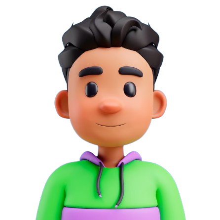
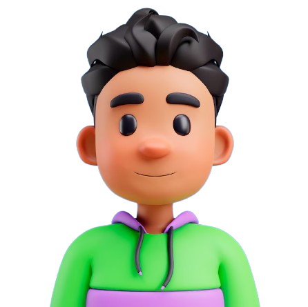
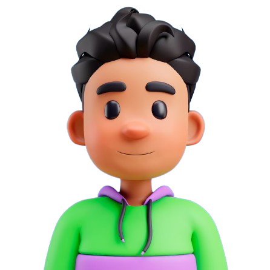

Bienvenidos a mi Portfolio
 

Bienvenidos a mi Portfolio

.png)
Conoce
Sobre Mí+3 años
Desarrollador autónomo
EstudiosTécnico en Programación de Software.
Tecnólogo en Análisis y Desarrollo de Software(En proceso).
ü뮂Äçüíª Mi nombre es Johan Sebastian Valle Barbarán. Desde que comenc√© en el mundo de la programaci√≥n, he experimentado una amplia gama de emociones, desde la frustraci√≥n hasta la satisfacci√≥n de resolver problemas complejos.
A lo largo de mi trayectoria, he trabajado en varios proyectos en equipo, donde aprendí la importancia de la colaboración y la toma de decisiones conjuntas. Me considero una persona en constante aprendizaje, motivado por la disciplina y el deseo de superación.
üî≠ Actualmente, estoy enfocado en fortalecer mis bases t√©cnicas y desarrollar habilidades blandas a trav√©s de cursos especializados y proyectos personales. Disfruto compartiendo mis conocimientos con otros, lo que refuerza mi propio entendimiento y contribuye al crecimiento de la comunidad.
Explora mí
ExperienciaTeniendo la oportunidad de colaborar con clientes y proyectos personales lo cual ha enriquecido mi experiencia y ampliando mi conjunto de habilidades.
Estuve como aprendiz investigador en el semillero de software del Centro de diseño e innovación tecnológica industrial donde me desempeñe como desarrollador backend .
Esta empresa fue creada como requisito de grado en el cuál desarrollamos un software de manejo de información de una constructora donde me desempeñe como Full Stack.
Explora Mís
ProyectosSitio de escritorio donde aprendí el manejo de CRUD con PHP ademas del trabajo en equipo ya que eramos 4 personas trabajando en el.
angeles4x4Página Web donde aprendi el manejo de usuarios y creación de publicaciones, además fue un reto porque fué la primera vez que realice responsive design.
Explora Mís
Skills
HTML 5

CSS 3

Javascript

Figma
Si tienes alguna pregunta o simplemente deseas hablar, no dudes en enviarme un mensaje.
Enviar Correo